In 2018, 149 people, mostly women, from all over China chose to speak up and report those who had sexual assaulting him or her. Altogether 54 preptrators were revealed. It was known as the Chinese version of the global MeToo Movement.
This project aims to document what happened, who were the preptrators and more importantly, the courageous individuals who stood up and became a power in changing social conceptions and even legislations.

Total Reported MeToo Cases In China By Month (2018)
54 cases in total
50
cases
33 cases in July
30
10
2
Jan
Feb
Mar
April
May
June
July
Aug
Sep
Oct
Nov
Dec
Total Reported MeToo Cases In China By Month (2018)
50
33 cases in July
cases
30
10
2
Jan
Feb
Mar
April
May
June
July
Aug
Sep
Oct
Nov
Dec
Total Reported MeToo Cases In China By Month (2018)
50
cases
33 cases in July
30
10
2
Jan
Mar
May
July
Sep
Nov
1. Preptrator Chart By Month
Chen Xiaowu, a professor from China's Beihang University, was reported by one of his former students for sexual harrassing female students for years. Chen was removed from his teaching position. This marked the very begining of China's MeToo Movement.
We are highlighting P2
We are highlighting P3
We are highlighting P4
We are highlighting P5
We are highlighting P6
Source:
Victim dots
Victim Cases:
Each button should be turned into a step (scroll down to see them).
When I resize, the graphic should scale to the width of its container, but not the height.
It would be nice if you gave me a sentence to pretend this is a story instead of just "here's Africa!" Not that we have a strong story, of course.
We are highlighting victim01
We are highlighting victim02
We are highlighting victim03
We are highlighting victim04
We are highlighting victim05
3.Timeline for Laws and Regulations
At vero eos et accusamus et iusto odio dignissimos ducimus qui blanditiis praesentium At vero eos et accusamus et iusto odio dignissimos ducimus qui blanditiis praesentium
Proin quam velit, efficitur vel neque vitae, rhoncus commodo mi. Suspendisse finibus mauris et bibendum molestie. Aenean ex augue, varius et pulvinar in, pretium non nisi.
Proin iaculis, nibh eget efficitur varius, libero tellus porta dolor, at pulvinar tortor ex eget ligula. Integer eu dapibus arcu, sit amet sollicitudin eros.
In mattis elit vitae odio posuere, nec maximus massa varius. Suspendisse varius volutpat mattis. Vestibulum id magna est.
In mattis elit vitae odio posuere, nec maximus massa varius. Suspendisse varius volutpat mattis. Vestibulum id magna est.
In mattis elit vitae odio posuere, nec maximus massa varius. Suspendisse varius volutpat mattis. Vestibulum id magna est.
In mattis elit vitae odio posuere, nec maximus massa varius. Suspendisse varius volutpat mattis. Vestibulum id magna est.
Aenean condimentum odio a bibendum rhoncus. Ut mauris felis, volutpat eget porta faucibus, euismod quis ante.
Vestibulum porttitor lorem sed pharetra dignissim. Nulla maximus, dui a tristique iaculis, quam dolor convallis enim, non dignissim ligula ipsum a turpis.
In mattis elit vitae odio posuere, nec maximus massa varius. Suspendisse varius volutpat mattis. Vestibulum id magna est.
In mattis elit vitae odio posuere, nec maximus massa varius. Suspendisse varius volutpat mattis. Vestibulum id magna est.
In mattis elit vitae odio posuere, nec maximus massa varius. Suspendisse varius volutpat mattis. Vestibulum id magna est.